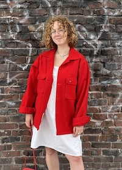

Hi! I’m Annie Dauber, an arts worker, writer and student, currently based in Brooklyn. I attend the Pratt Institute and am in my first year of the MLIS program. I plan to pursue an Advanced Certificate in Archives over the course of my studies. I am currently the Exhibitions and Collections Management and Photography Curatorial Intern at the Morgan Library & Museum.
I grew up in Los Angeles, and moved to the Bay Area for college at UC Berkeley where I majored in Linguistics with a minor in Creative Writing. After graduating, I worked several positions in the arts, teaching and working in nonprofits, until I eventually settled into gallery work. I worked as Registrar and Exhibitions manager at Dolby Chadwick Gallery for 3 years, primarily managing exhibition programming and artwork shipments. I then worked at Jessica Silverman as Registrar and Logistics Manager, coordinating artwork movements for exhibitions and international art fairs.
My writing practice mostly consists of reviews and criticism of contemporary art, along with press releases commissioned by galleries. I have worked with pt. 2 Gallery, Dolby Chadwick Gallery, and Upper Market Gallery in this capacity. My critical work has also been published in Juxtapoz Magazine, Sixty Inches From Center, and Woven Tale Press. My press release for the 2023 Emilio Villalba exhibition was featured in his 2025 monograph produced by Dolby Chadwick Gallery. I hope to transition to more creative and academic projects in the coming years.
For more information, click around the rest of my site!